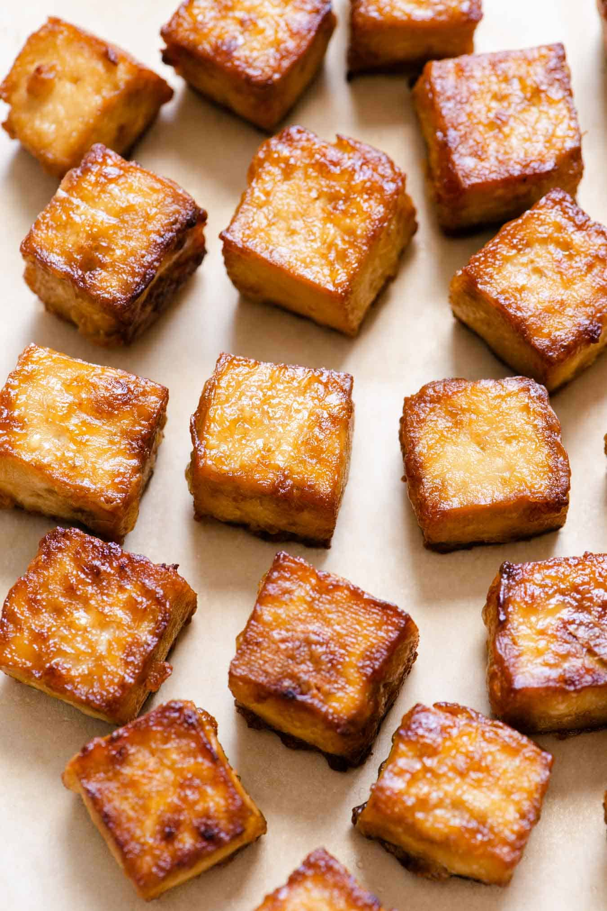

Baked Tofu

Description
This tofu can be put in wraps, sandwiches, topped on salads, soups, or
even just plucked from the fridge and eaten cold! We sometimes have to
make extra because we find ourselves snacking on it despite our desire
to save it for meals.
The best part is you can customize this to your hearts content. We have
tons of different marinades that work.
This is super easy to prepare a bunch and keep in the fridge. You can
freeze the tofu before marinading. There is a double freeze and double
thaw technique that some people swear by that supposedly creates large
holes in the tofu where water crystals form and expand. This supposedly
allows more marinade to seep into the body of the tofu itself.
Ingredients
- One block tofu (or more!)
- 1/4 cup soy sauce or tamari
- 2 tablespoons rice vinegar
- 1 tablespoon hot sauce, like a chili garlic sauce or Sriracha
- 1 tablespoon lime juice
- 2 teaspoons toasted sesame oil
-
2 teaspoons agave, maple syrup, or your favorite liquid sweetener
- 1 teaspoon liquid smoke
Steps
- Press the tofu in your preferred method.
-
Make the marinade. Mix the soy sauce, rice vinegar, hot sauce, lime
juice, toasted sesame oil, sweetener, and liquid smoke together.
-
When the tofu is ready, slice in slabs approx. 1/4 - 1/2 inch wide.
-
lay the tofu on a glass baking pan and pour the marinade over the top.
Make sure the majority of the tofu is covered. If it isn't a smaller
container might be better. Let this rest for at least 30 minutes. Make
sure to flip the tofu once or twice. If you can leave this overnight,
that would be preferrable.
-
Heat the oven to 375°. Once it is hot, lay the tofu on a baking
sheet. You can line this with baking paper or silicone baking mats.
Put in the oven for 12 minutes. Make sure to keep the remaining
marinade for later!
-
After the first 12 minutes, take out the tofu. Flip each piece and
then put a spoonful of the marinade over the now-uncovered topside.
Put the tofu back in the oven for another 12 minutes. Repeat this
process until all the marinade is used up.
- Enjoy!